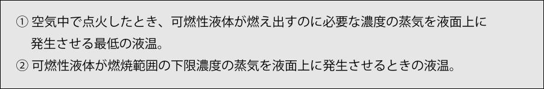
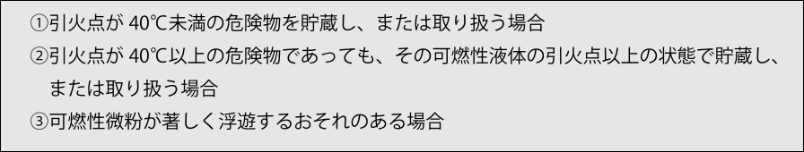
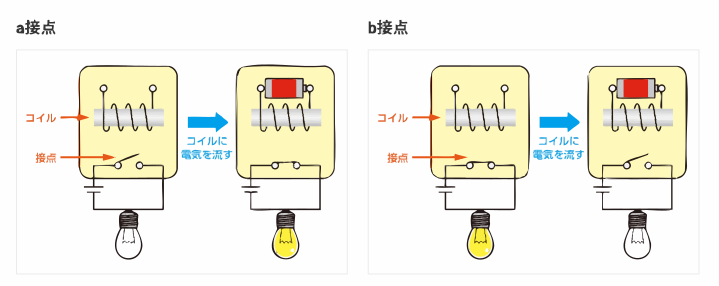

引火点と発火点
引火点には、次の２つの定義があります。

液温が引火点を超えると、点火源により可燃性蒸気が一時的に発火しやすくなります。
燃焼点は、一度着火した蒸気が自己持続的に燃焼を継続するために必要な温度であり、通常は引火点より数℃高い値です。引火点では燃焼を維持できません。
可燃性液体は、その液温に対応した蒸気圧を持ち、液面付近には一定の蒸気濃度が存在します。液温が高いほど蒸気発生量は増大し、低いほど減少します。
発火点
発火点とは、可燃性物質を空気中で加熱した際に、外部から火源を与えなくても自己発火して燃焼を開始する最低温度をいいます。
例：ガソリンでは発火点が約300 °C（引火点は−40 °C以下）、
灯油では発火点が約220 °C（引火点は40 °C以上）です。
着火源（点火源）・発火源となるもの
着火源（点火源）：物質に発火に必要なエネルギーを与え、直接火をつける要因。
発火源：火災を引き起こした火種や事象そのものを指します。
主な例：
- 火炎
- 機械的摩擦による摩擦熱・火花
- 衝撃による熱・火花
- 高温金属（表面が熱くなった金属）
- 高温ガス
- 電気火花
- 酸化熱・分解熱・発酵熱・重合熱
- 放射熱
- レーザー光線・赤外線・紫外線などの光・電磁波
- 急激な圧縮圧力・衝撃波
防爆構造
可燃性蒸気や粉じんが空気と混合し、爆発下限界以上の可燃性雰囲気を生じる場所、あるいは可燃性危険物や腐食性ガスが存在する特別な環境に設置する電気機器は、防爆構造としなければなりません。
これは、通常の電気機器から発生する火花や熱が発火源となり、可燃混合気に引火して爆発事故を起こす危険があるためです。
防爆構造とすべき電気設備の範囲は、次のとおりです。

防爆構造の電気機器の例
| 機材 | 説明 |
|---|---|
| 回転機 | 電動機（モータ）など |
| 変圧器類 | 変圧器・変成器など |
| 開閉器及び制御器類 |
|
| 計測器類 |
|
| 照明器具 |
|
| 電気配線 | 防爆電気配線など |
リレー（継電器）は、コイルに電流を流すと磁力が生まれ、内部の可動接点を「つなぐ／切る」ことで他の回路をON／OFFできるスイッチ部品です。機械的に接点が動くため、開閉時に火花が飛びやすい点に注意が必要です。
さらに、電気設備に限らず、ボイラーや加熱炉など可燃性物質を扱うすべての機器は必ず確実に接地してください。

出典: OMRON コンポーネント製品基礎知識
a接点（常開接点）
コイルに通電していないときは回路が開いている接点です。「常に開いている」ことから「常開接点」と呼ばれ、コイルに通電すると接点が閉じて回路がONになります。
b接点（常閉接点）
コイルに通電していないとき回路が閉じている接点です。「常に閉じている」ことから「常閉接点」と呼ばれ、コイルに通電すると接点が開放されて回路がOFFになります。
クイズ
次のうち、燃焼点の定義として誤っているものはどれか？
次は燃焼範囲に進みます。